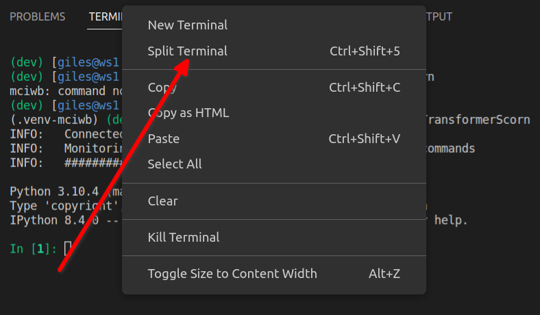
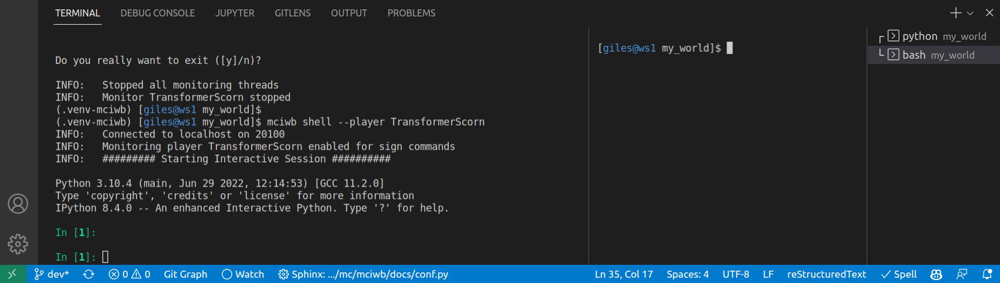

Modules and Packages#
In this tutorial we will start to use vscode to develop a Python package
for making buildings in the game. We will be starting with
the pagoda building from the previous tutorial and here we will also
go into the detail of how the build_pagoda function works.
You may like to install Python extensions for vscode at this point, see VSCode Extensions
Getting a Bash Prompt#
We are going to use some bash commands here so lets open a second terminal in VSCode so that we can have a bash prompt but also keep our Python shell prompt open.
Right click in the VSCode terminal area and select Split Terminal


Splitting the Terminal#
You can grab the dividing line between the two terminals and drag it to the right with your mouse. This makes the Python terminal bigger and the Bash terminal smaller. Then your terminal area of VSCode should look like this:


Python prompt and Bash prompt#
Create a Package and a Module#
A python module is simply a file with a .py extension containing Python
code.
A package is simply a folder (directory) that contains python modules.
We are going to create a package called buildings with a single module
to start with called pagoda. Type the following commands at the
bash prompt:
cd $HOME/my_world
mkdir buildings
cd buildings
touch __init__.py
code pagoda.py
The steps above were:
Change working directory to
$HOME/my_worldwhich is our VSCode work folder.Make a new directory called
buildings, this is our new packageChange working directory to
buildingsCreate an empty file called
__init__.pyin thebuildingsdirectory. This is a special file name that tells Python that this directory is a Python package.Tell vscode to open a new file called
pagoda.pyin the editor window
Now we can paste our pagoda function into the editor window and save it with Menu -> File -> Save (or Ctrl+S is a shortcut to save the current file). Use this slightly modified version of the pagoda function:
"""
Build a pagoda with ``polygon`` and fill commands.
Usage: ``build_pagoda(world.player.pos, width=20)``
"""
from mciwb.imports import Direction, FillMode, Item, get_client, polygon
def build_pagoda(pos, width=4, floor_height=4, item: Item = Item.GOLD_BLOCK):
"""
Create a pagoda out of blocks at the given position.
Each successive floor is narrower and each has a balcony at the top.
:param pos: position of the base of the pagoda
:param width: width of the base of the pagoda
:param floor_height: height of each floor
:param item: block to use for the base of the pagoda
"""
c = get_client()
# calculate how many levels we can make if we reduce width by 2 each level
levels = width // 2
for level in range(levels):
# calculate the width of the pagoda for this level
floor_width = width - 2 * level
# calculate the base position of the walls for this level
base = pos + Direction.UP * level * floor_height
# calculate the position of the balcony for this level
# it should surround the top layer of the walls for this level
balcony = base + Direction.UP * (floor_height - 1)
# create the balcony for this level
polygon(
client=c,
center=balcony,
height=1,
diameter=floor_width + 2,
sides=4,
item=item,
mode=FillMode.REPLACE,
)
# create the walls for this level
polygon(
client=c,
center=base,
height=floor_height,
diameter=floor_width,
sides=4,
item=item,
mode=FillMode.REPLACE,
)
To try using this function you can now type the following command in the iPython prompt:
from buildings.pagoda import build_pagoda
build_pagoda(world.player.pos)
That should build a little pagoda around your player. You can break some blocks to make a door for you to exit the pagoda!
How it Works#
Let’s take a look at all of the new things that we used in our build_pagoda
function.
Import#
from mciwb.imports import Direction, FillMode, Item, get_client, polygon
import allows us to access code from other modules.
One of the greatest features of Python is its extensive library of built in modules. For example the maths module contains functions for doing math. e.g.
from math import sqrt, cos, sin
The polygon function that we used to make the pagoda is implemented using
some of these math functions.
Luckily, you don’t need to know anything about the mathematics of polygon
construction because the polygon function has done all that for you!
So, Direction and
Item are already familiar, we have previously used them in
iPython without needing to import them (FillMode is new, we
explain it below).
But we need to import them here because we are
writing a new module called pagoda (in the file pagoda.py).
import is the command to share
code between modules and is therefore required in our new pagoda module.
import is usually used at the beginning of a module and code that is imported is available to all of the code within the module.
Once you become familiar with Python you will eventually be comfortable
looking at online documentation to discover packages and modules you want to
use and discovering the imports you need to use them. But for now it is
easiest just to copy the import statements from examples like pagoda.py.
Get_client#
Whenever we call any functions that make changes to Minecraft we need a client
object. This represents a connection to our Minecraft server. (An exception to
this is functions in the world object since world holds a client
connection for us to save on typing)
The get_client function obtains a client object for you to use. Here we
assign it into the variable c and pass c to the polygon function.
Advanced programmers may want to read up on how this is a thread-safe client object! see (MCIPC Client object).
Polygon#
polygon is a function that draws the outline of a polygon using blocks.
It is capable of
making any regular polygon and using that shape to build a tower. The
parameter height tells it how many levels of the same polygon to stack
on top of each other.
If you want to make a circular tower then you can just pass a large number
like 400 as the number of sides. In pagoda we use 4 sides to make a square
pagoda.
Making a Pagoda#
So how does the overall function work?
The caller has specified the width of the bottom of the pagoda. We use this
to calculate how many levels we can make. Each level is 2 blocks narrower
than the one below and so width divided by 2 should be the number of levels.
We use integer division to round down to the nearest integer as we
don’t want to try to make half a level // is the integer division
operator.
Next we see that we loop over the range of levels.
For our width 30 pagoda we have 15 levels and therefore level will
range from 0 to 14.
For each iteration of the for loop we build some walls and a balcony.
The base of the walls is calculated as level * floor_height blocks
above the starting pos. floor_height is the default value of 4.
Thus, the first
floor base is 0 blocks above the starting pos (0 times 4) and
each successive level is 4 blocks above the previous level.
polygon(
client=c,
center=base,
height=floor_height,
diameter=floor_width,
sides=4,
item=item,
mode=FillMode.REPLACE,
)
- To create the walls we call polygon with these parameters:
- client is set to c:
the client object needed to talk to the Minecraft server
- centre is set to base:
the calculated starting point for the polygon
- height is set to floor_height:
the height of the polygon (defaulted to 4)
- diameter is set to floor_width:
the diameter of the polygon (starting at 30 for the bottom level)
- sides set to 4:
the number of sides of the polygon, we use 4, making a square
- item is set to item(which was passed to
build_pagoda): the blocks to use for the polygon, defaulted to GOLD_BLOCK
- mode is set to FillMode.REPLACE:
this means that all pagoda blocks replace existing blocks. You could also use FillMode.KEEP which only places blocks if the current block is Item.AIR.
As we loop around the for loop we create a new polygon at each level,
but the width of it is shrinking by two blocks at each level. Eventually
we get to a narrow level at the top and the loop completes.
- Exercise:
Can you work out how the balcony is being drawn on each level? look at the math used to calculate
balconyand thepolygonfunction parameters used to draw the balcony and see if you can figure out how it works.- Exercise 2:
I found pesky pillagers patrolling on my pagoda. A friend pointed out that you can avoid this by placing slabs on top of every surface of the pagoda. Mobs (mobile entities) won’t spawn on a slab. Also you can make the slab a different material for an interesting look. You can make a pagoda with slabs on its surfaces with just two calls to the pagoda function. Can you work out how?
Comments#
At the beginning of
build_pagodawe have a block comment. It uses triple quotes"""which allow you to write a block of text including line breaks that is not interpreted as Python code.Good programmers will usually add a comment block at the top of their functions and using triple quotes is the standard way to do this.